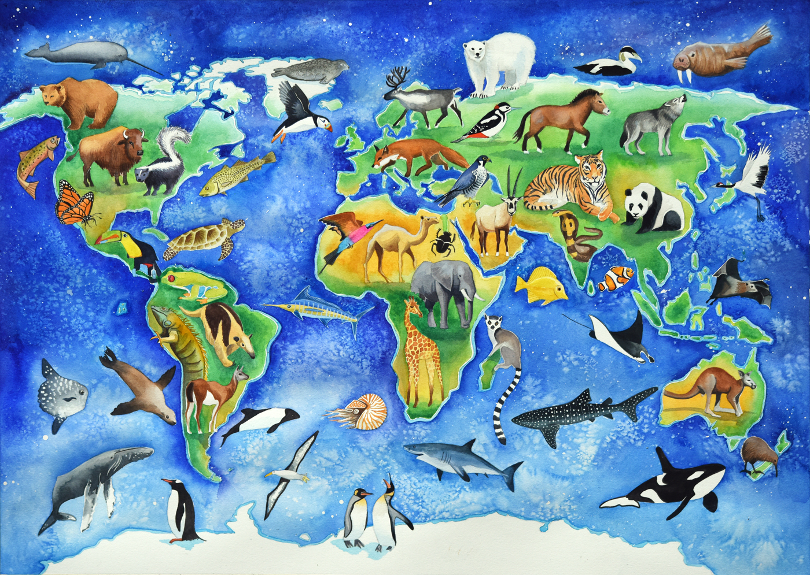
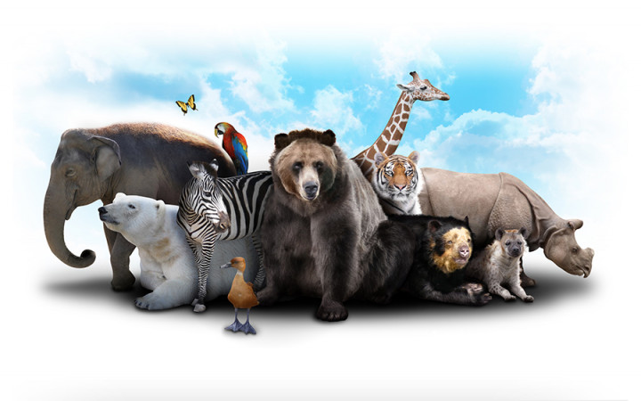

Animals of the World
Mammals
American Black Bear
Giant Panda
Chipmunk
House mouse
White-tailed deer
Raccoon
Eastern Grey Kangaroo
Birds
Common Raven
American Robin
Red-tailed Hawk
Ruby-throated Hummingbird
Carolina Chickadee
Reptiles
Butler's Garter Snake
Painted Turtle
Skink
Sea turtle
Emerald tree boa
Fish
Shark
Halibut
Guppy
Tuna
Sailfish
Great White Shark
Insects
Fire ant
Tent caterpillar
Blue bottle fly
Honey bee
Other
Tarantula
Lobster
Clam
Earthworm
Contact Us
 